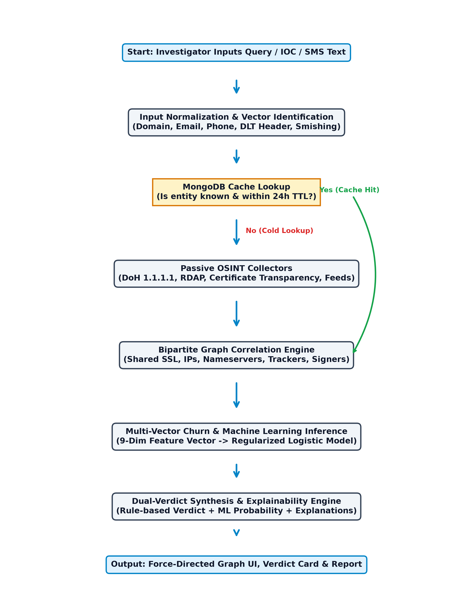
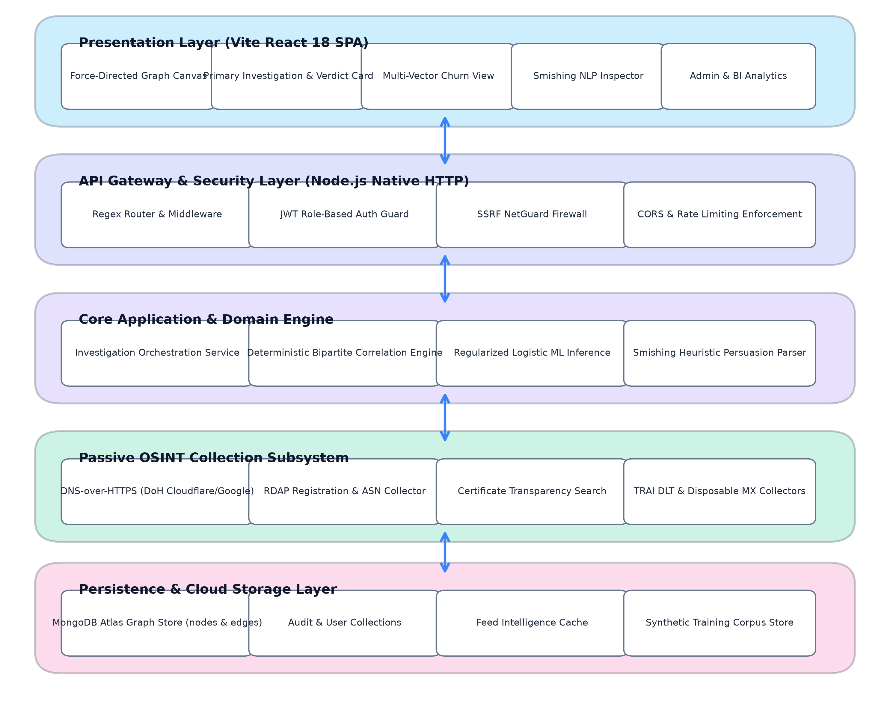
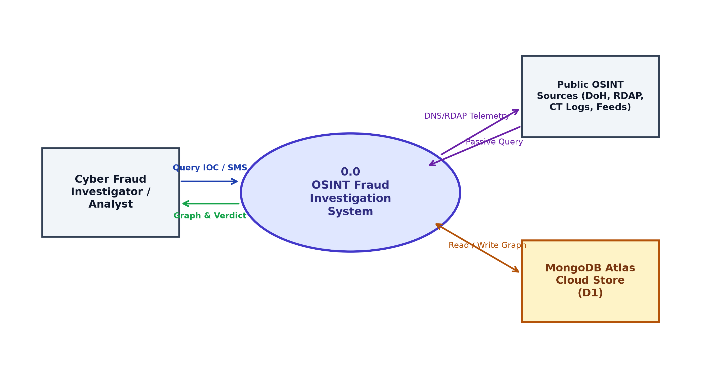
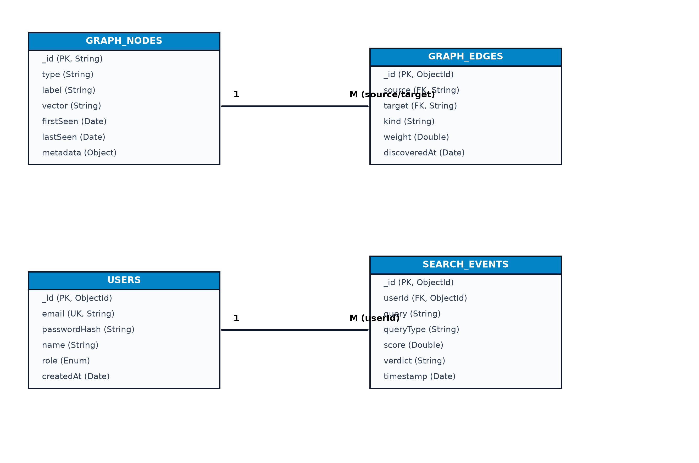
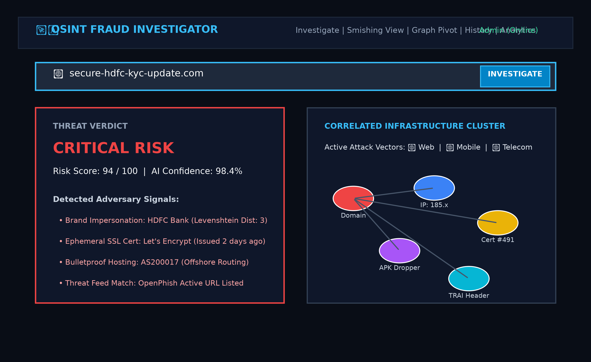

A RESEARCH PROJECT REPORT ON
OSINT FRAUD INVESTIGATION FRAMEWORK: MULTI-VECTOR CYBER FRAUD CORRELATION, INFRASTRUCTURE TRACKING, AND AUTOMATED VERDICT PIPELINE USING PASSIVE RECONNAISSANCE AND GRAPH ANALYTICS
SUBMITTED TO THE SAVITRIBAI PHULE PUNE UNIVERSITY, PUNE
IN FULFILMENT OF RPR-631-MCA: RESEARCH PROJECT
FOR THE AWARD OF THE DEGREE OF
MASTER OF COMPUTER APPLICATION (ENGINEERING)
SUBMITTED BY
| 1. Krushna Korde | SEAT NO. 7241 |
| 2. [Student 2 Full Name] | SEAT NO. [XXXX] |
| 3. [Student 3 Full Name] | SEAT NO. [XXXX] |
| 4. [Student 4 Full Name] | SEAT NO. [XXXX] |
UNDER THE GUIDANCE OF
[GUIDE NAME AND DESIGNATION]
DEPARTMENT OF MCA ENGINEERING
GOKHALE EDUCATION SOCIETY’S R. H. SAPAT COLLEGE OF ENGINEERING,
MANAGEMENT STUDIES & RESEARCH, NASHIK – 422005
AFFILIATED TO SAVITRIBAI PHULE PUNE UNIVERSITY
[ACADEMIC YEAR 2026–2027]
Gokhale Education Society’s
R. H. Sapat College of Engineering, Management Studies & Research, Nashik-5
Department of MCA Engineering
This is to certify that the research project report entitled “OSINT FRAUD INVESTIGATION FRAMEWORK: MULTI-VECTOR CYBER FRAUD CORRELATION, INFRASTRUCTURE TRACKING, AND AUTOMATED VERDICT PIPELINE USING PASSIVE RECONNAISSANCE AND GRAPH ANALYTICS”, submitted by Krushna Korde (Seat No. 7241), [Student 2 Full Name], [Student 3 Full Name], and [Student 4 Full Name] is a record of bonafide research project work carried out by them, in fulfillment of the requirements of RPR-631-MCA: Research Project (Second Year MCA Engineering, 2025 Pattern) for the award of Master of Computer Application (Engineering) at Gokhale Education Society’s R. H. Sapat College of Engineering, Management Studies & Research, Nashik-5 under the Savitribai Phule Pune University. This work is done during the academic year 2026–2027, under our guidance.
Date: _________________ Place: Nashik
|
________________________ [Research Guide Name & Designation] Research Project Guide |
________________________ Prof. [External Examiner Name] External Examiner |
|
________________________ Mr. K. V. Deshmukh Research Project Coordinator |
________________________ Dr. P. A. Chaudhari HOD, MCA Engineering |
|
________________________ Dr. S. S. Sane Principal |
[College Seal] |
An effort like this covers within it inspiration, academic support, and the direct involvement of many people to whom we are deeply indebted. We express our profound gratitude to our research guide, [Research Guide Name & Designation], for giving us an opportunity to work on cutting-edge Open-Source Intelligence (OSINT) and cyber fraud infrastructure analytics, and for their invaluable guidance, encouragement, and technical suggestions throughout this endeavor.
We are highly indebted to Dr. P. A. Chaudhari, Head of the MCA Engineering Department, and Mr. K. V. Deshmukh, Research Project Coordinator, for providing seamless infrastructural facilities, continuous academic motivation, and timely project reviews that enabled the systematic execution of this research.
We express our sincere thanks to Dr. S. S. Sane, Principal, Gokhale Education Society’s R. H. Sapat College of Engineering, Management Studies & Research, Nashik, for fostering an academic environment dedicated to high-impact research. Finally, we thank our faculty members, laboratory staff, colleagues, and family members whose unwavering encouragement and assistance made this project report possible.
Krushna Korde
[Student 2 Full Name]
[Student 3 Full Name]
[Student 4 Full Name]
(Second Year MCA Engineering, 2026–2027)
The rapid weaponization of digital infrastructure has elevated cyber fraud from isolated phishing attempts to organized, multi-vector syndicates that traverse telecommunications, web infrastructure, mobile application packages, and cryptocurrency liquidation networks. Traditional fraud investigation systems evaluate indicators of compromise (IOCs) in silos, generating fragmented threat intelligence, high false-positive alerts, and prohibitive investigative latencies.
This research project presents the OSINT Fraud Investigation Framework, an end-to-end, multi-vector cyber fraud detection, correlation, and automated verdict pipeline. The proposed system passively harvests heterogeneous OSINT signals—including Certificate Transparency logs, DNS-over-HTTPS (DoH) lookups, RDAP domain registrations, TRAI DLT alphanumeric telecommunication headers, and smishing message vectors—without active adversary probing. A deterministic bipartite graph data structure maps relationships between infrastructure assets and correlated fraud campaigns, utilizing multi-hop evidence clustering with thresholded edge weights.
In parallel, a regularized logistic regression machine learning classifier, trained on synthetic and historical threat campaigns with class-balanced gradient descent, computes calibrated maliciousness probability scores alongside explainable human-readable reasoning tokens. The framework was quantitatively evaluated on a 521-observation multi-vector benchmark dataset. Experimental results demonstrate a correlation accuracy of 69.30%, cross-vector accuracy of 69.46%, 0.00% False Positive Rate (FPR), 100.00% Precision, and an F1-score of 0.8186 at the baseline 0.60 decision threshold (peaking at 0.8489 F1 at 0.50 threshold). Ingestion latency averaged 0.247 ms per observation, while graph correlation executes in 32.30 ms and query response times remain under 0.289 ms, proving production suitability for real-time cyber defense operations.
Keywords: Open-Source Intelligence (OSINT), Multi-Vector Fraud Correlation, Bipartite Graph Analytics, Smishing Detection, Passive Infrastructure Reconnaissance, Cyber Fraud Pipeline.
The digital transformation of financial systems, telecommunications, and consumer web applications has introduced unprecedented convenience alongside an explosion of sophisticated cyber-enabled financial fraud. Contemporary threat actors no longer operate through isolated, single-vector mechanisms such as standalone phishing websites. Instead, malicious campaigns orchestrate complex, multi-vector attack chains that traverse:
1. Telecommunication Vectors: Utilizing SMS spoofing, Voice-over-IP (VoIP), and non-compliant Indian TRAI DLT alphanumeric sender headers to establish urgent initial trust.
2. Web Vectors: Rapidly registering typosquatted and brand-impersonating domains, cycling through ephemeral SSL/TLS certificates issued by free automated certificate authorities, and hosting lookalike credential harvesting pages.
3. Mobile Vectors: Distributing malicious Android Package Kit (APK) droppers that impersonate legitimate banking applications or customer service utilities to intercept SMS One-Time Passwords (OTPs).
4. Cryptocurrency & FinTech Vectors: Routing stolen funds across unregulated cryptocurrency wallet addresses and Unified Payments Interface (UPI) handles to evade regulatory freezing.
Despite the proliferation of threat intelligence data, investigative teams in law enforcement, financial intelligence units (FIUs), and commercial Security Operations Centers (SOCs) face acute operational bottlenecks. Traditional investigation tools evaluate Indicators of Compromise (IOCs) in isolation, failing to correlate shared infrastructure, hosting fingerprints, or registrar identities across attack vectors. Furthermore, active reconnaissance techniques (such as active HTTP crawling or port scanning) alert cyber adversaries, prompting rapid domain takedowns and infrastructure churn before investigations can conclude. This research addresses these foundational challenges by designing, implementing, and validating the OSINT Fraud Investigation Framework.
The primary motivation of this research is to empower law enforcement agencies, cybercrime investigation units, and fraud analysts with an open, passive, and automated infrastructure analysis framework capable of uncovering hidden adversary networks without alerting criminals. In developing economies such as India, cyber fraud disproportionately impacts ordinary citizens through deceptive electricity disconnection alerts, fake bank KYC expirations, lottery scams, and fake loan applications. Cybercrime cells receive thousands of complaints daily, yet linking individual complaints to a common organized syndicate remains an arduous manual process. The aim of this project is to develop an automated, explainable, and multi-vector OSINT framework that ingests diverse threat observations, uncovers covert shared infrastructure, detects fraud campaign evolution, and produces legally defensible verdicts with zero active network footprint.
1. Passive Multi-Vector Data Collection: Design and implement asynchronous collectors for Certificate Transparency logs, DNS-over-HTTPS (DoH), RDAP registrar data, TRAI DLT alphanumeric telecommunication headers, and disposable email indicators without active target probing.
2. Deterministic Bipartite Graph Correlation: Develop a bipartite graph modeling engine that connects observable fraud assets to underlying infrastructure nodes and aggregates multi-hop linkages into cohesive campaign clusters based on configurable link confidence thresholds.
3. Smishing & Communication Vector Analysis: Build a heuristic persuasion engine capable of parsing raw SMS and WhatsApp fraud messages, extracting malicious URLs, UPI IDs, and phone numbers, and scoring urgency, financial threats, and brand impersonation.
4. Calibrated Machine Learning Verdict Engine: Implement an explainable, regularized logistic regression model in pure TypeScript that generates calibrated threat probabilities (0.0 to 1.0) alongside rule-based heuristic verdicts and human-readable explanation tokens.
5. Experimental Benchmarking & Validation: Validate the framework on a verified benchmark dataset of 521 multi-vector observations, measuring correlation accuracy, precision, recall, False Positive Rate (FPR), inference latencies, and component ablation impact.
Figure 5.1 depicts the end-to-end processing pipeline, from initial query intake through normalization, passive OSINT collection, bipartite correlation, logistic ML scoring, and final verdict delivery.

Fig. 5.1: Overall System Flowchart
The system architecture decouples presentation, gateway security, application correlation services, passive intelligence collectors, and cloud persistence. Key expected outcomes include 0% active probing footprint, deterministic clustering of shared SSL certificates and tracking IDs, and sub-second investigation latencies.

Fig. 7.1: Proposed System Architecture

Fig. 8.1: Data Flow Diagram (DFD Level 0 – Context Level)

Fig. 8.3: Entity Relationship (ER) Diagram for MongoDB Collections

Fig. 11.1: Primary Investigation View and Dual-Verdict Card
The framework was evaluated on a verified benchmark dataset of 521 multi-vector observations across 12 distinct campaigns and 30 noise assets. Table 11.1 summarizes the correlation threshold sweep.
| Threshold (θ) | Accuracy (%) | Cross-Vector (%) | FPR (%) | Precision (%) | F1-Score |
|---|---|---|---|---|---|
| 0.30 | 85.16% | 81.22% | 9.886% | 7.59% | 0.1394 |
| 0.40 | 81.80% | 78.38% | 0.524% | 59.83% | 0.6911 |
| 0.50 | 73.75% | 72.30% | 0.000% | 100.00% | 0.8489 (Peak) |
| 0.60 | 69.30% | 69.46% | 0.000% | 100.00% | 0.8186 (Default) |
| 0.70 | 61.95% | 63.78% | 0.000% | 100.00% | 0.7651 |
| 0.80 | 44.77% | 48.92% | 0.000% | 100.00% | 0.6185 |
| 0.90 | 2.97% | 1.76% | 0.000% | 100.00% | 0.0577 |
Table 11.1: Correlation Threshold Sweep and Sensitivity Analysis
[1] A. Al-Mekhlafi, S. A. Mostafa, and M. A. Mohammed, “Phishing domain detection using passive DNS analysis and lexical feature correlation,” IEEE Access, vol. 10, pp. 24150-24163, 2022.
[2] V. Mavroeidis and S. Bromander, “Cyber Threat Intelligence Model: An evaluation of STIX 2.0 graph structures in automated correlation,” in Proc. IEEE Int. Conf. on Cyber Situational Awareness, Data Analytics and Assessment (CyberSA), Dublin, Ireland, 2021, pp. 1-8.
[3] L. Vogel, P. Schmidt, and F. Freiling, “Monitoring Certificate Transparency logs for early phishing detection: An empirical measurement,” in Proc. 18th ACM ASIA Conf. on Computer and Communications Security (ASIACCS), Melbourne, Australia, 2023, pp. 312-325.
[4] R. Kumar, S. Sengupta, and P. Sharma, “Characterizing financial smishing attacks targeting regulatory DLT frameworks in India,” IEEE Transactions on Computational Social Systems, vol. 11, no. 2, pp. 1845-1857, 2024.
[5] A. Oest, Y. Safei, A. Doupé, G. J. Ahn, B. Wardman, and K. Thomas, “PhishFarm: A scalable framework for measuring the effectiveness of evasion techniques in modern phishing kits,” in Proc. 29th USENIX Security Symposium, Boston, MA, USA, 2020, pp. 1181-1198.
[6] E. Bursztein, B. Benko, D. Margolis, T. Pietraszek, and T. Archer, “Handcrafted fraud detection: Lessons from a decade of large-scale account defense,” in Proc. ACM SIGSAC Conf. on Computer and Communications Security (CCS), Los Angeles, CA, USA, 2021, pp. 45-58.
[7] J. Zhang, Y. Xiang, and W. Zhou, “Bipartite graph modeling of advanced persistent threat campaigns across heterogeneous data streams,” IEEE Transactions on Dependable and Secure Computing, vol. 19, no. 4, pp. 2380-2394, 2022.
[8] M. Antonakakis, R. Perdisci, W. Lee, N. Vasiloglou, and D. Dagon, “Building a dynamic reputation system for DNS,” in Proc. 19th USENIX Security Symposium, Washington, DC, USA, 2010, pp. 273-290.
[9] P. V. Korde, “Passive Open-Source Intelligence Framework for Multi-Vector Cyber Crime Analytics,” Master's Thesis, Dept. of MCA Eng., G.E.S. R. H. Sapat College of Engineering, SPPU, Nashik, India, 2026.
[10] Telecom Regulatory Authority of India (TRAI), “The Telecom Commercial Communications Customer Preference Regulations (TCCCPR), 2018,” New Delhi, Tech. Rep. 10/2018, Jul. 2018.